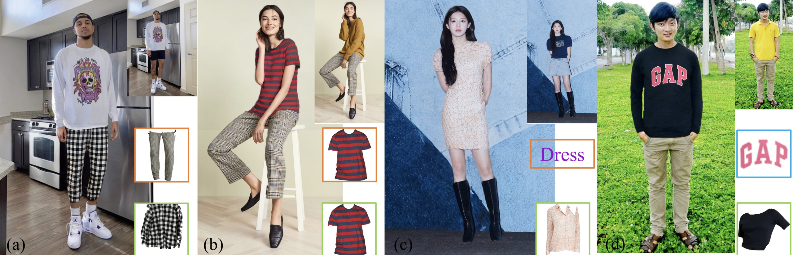
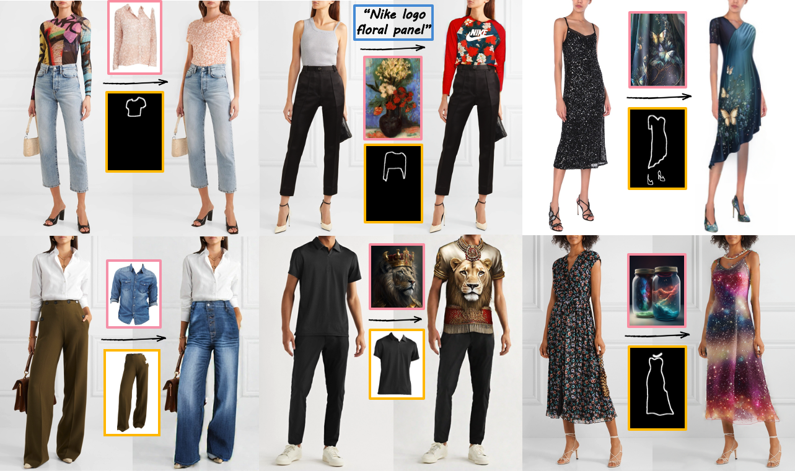
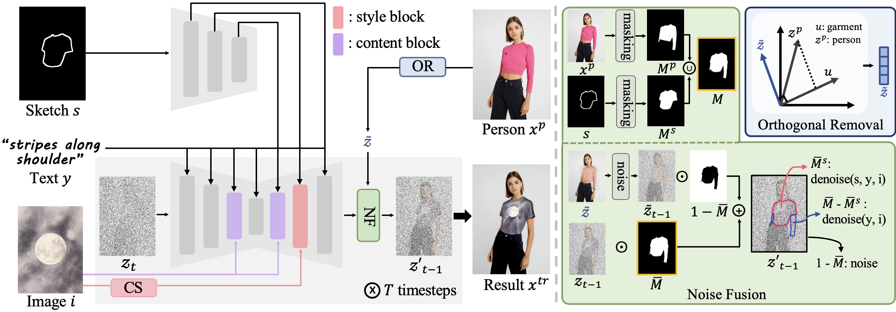
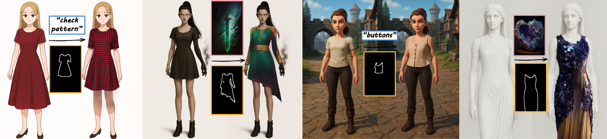

VISTA: Virtual Styling and Try-On from Any Design

기존 연구는 디자인 소스가 의류 이미지로 제한 → 폭 넓고 창의적인 디자인 소스 적용 불가
의류에 대해서만 가상 체험 지원 → 신발·가방·목걸이 등 액세서리 포함 코디 지원 부족

→ 의류 이미지 뿐만 아니라 예술 작품, 자연 이미지 등 다양한 디자인 소스 활용 가능, 액세서리까지 포함한 전체 가상 착장 기능 지원

모달리티별 scale factor 조절로 조건 영향력을 제어하거나 아예 제외할 수도 있음
U-Net 블록 별 구분과 CS(Content Suppression)을 제안하여, 다양한 이미지 소스에서 원하는 요소를 선택적으로 반영 가능
Orthogonal Removal과 Noise Fusion을 제안하여 데이터셋 학습 없이 가상 체험 가능

training-free 구조로 특정 데이터 분포에 대한 과적합 없이 다양한 시각적 도메인에 안정적으로 적용 가능

원하는 요소를 선택적으로 반영 가능, content는 객체까지 포함한 정보, style은 객체를 제외한 색상이나 질감 같은 시각적 표현 정보

random seed 변경만으로 여러 디자인 후보를 손쉽게 탐색 가능